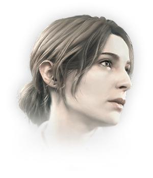
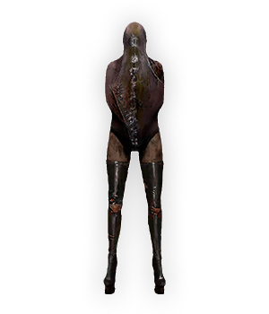
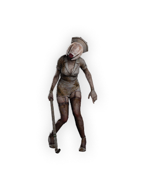
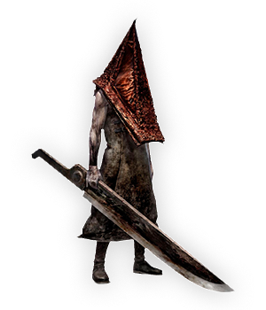
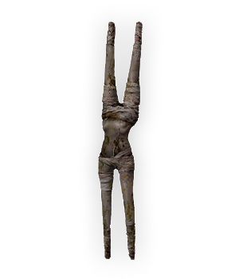

What is Silent Hill 2?
About Silent Hill 2:
Silent Hill 2 is a psychological horror survival game, and you play as the main character James Sunderland who travels around the foggy town of Silent Hill looking for his wife, Mary.
.png)
This is James Sunderland the main protagonist of the game and the character you play as

This is Mary Shepherd-Sunderland the inciting movtivation for James journey through Silent Hill
Game play:
During the game you will encounter various monsters that you must defeat in order to progress through the game:




About our project:
Our research explores the different media that inpired Silent Hill 2, focusing on the different parts of speech. We anaylzed the games full dialogue script and in game memos, then compared this to the dialogue from the four films that inspired the game. Keep exploring to see what we found!
Methodolgy:
The tools we used to gather our data included Beautiful Soup for scraping website content, followed by the use of regular expressions (regex) to strucutre the data into XML files. We then used these XML and TXT files in a Jupyter notebook to analyze different parts of speech.